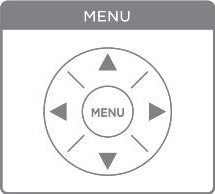

Some settings cannot be changed using the control panel alone. To change these settings, you must navigate through the pen's menu.

To enter the menu, tap the middle "MENU" icon. Then, use the four direction icons to navigate through the menu according to the following map (fig. 6):Figure 1. Menu Navigation Map
![A map of the pen's Full map of the menu. The menu structure shown in the diagram is tier-based. To navigate within a tier, you must use the "up" and "down" icons. To choose a setting, you must use the "right" icon. The first tier has "Main Menu," "Paper Replay," "Bluetooth Audio," and "Settings." Under "Paper Replay" is "Record a New Session," "Play Session" and "Delete Session." Under "Bluetooth Audio" is "Search Bluetooth Speaker," "Connect Bluetooth Speaker," and "Disconnect." Under "Settings" is "Recording Quality," under which is HIGH, MEDIUM, or LOW, "Microphone Sensitivity," under which is CONFERENCE ROOM, LECTURE HALL, or AUTOMATIC, "Playback Latency," under which is ON and OFF, "Menu Voice," under which is ON and OFF, "Display Brightness," under which is 30%, 50%, 75%, 90%, and 100%, "Scroll Speed," under which is 1 to 10, "Display Orientation," under which is LEFT and RIGHT, "Date Format," "Time Format," Auto-Off Time," under which is 15min, 30min, 1h, and 2h, "Smartpen Name," and "Locale," under which is English and Espanol.](../images/Menu_Navigation.JPG)